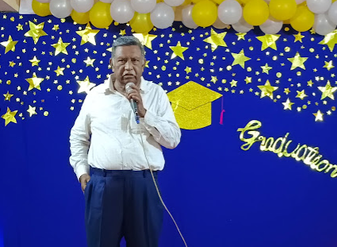

WISDOM |
LOVE |
SERVICE |
ABOUT US
Our "Daniel Memorial E.M. School" is an organization that has been successful in shaping many students in our style for generations and making them educated, leaders and proficient in various fields. In these days when marks and ranks are considered as the measure of student's ability, we have cured such policies and stereotypes by adopting contemporary teaching methods and forgetting humanistic values. Nurturing the all-round development of the student Our main purpose is to strive to achieve.
The following points mentioned are the specialities of our school:
- Management whose main objective is to make the most valuable education accessible to all.
- With qualification, experience and dedication, they always seek the welfare of students A teaching team whose main objective is development.
- Managing the classroom creatively and with special care where the future of Sri Vidyarthi is shaped.
- Lab & Library facility to enhance the knowledge and understanding skills of the students.
- Computer education from primary classes in accordance with current technology and a fun playground that enhances mental and physical development of students.
- To make the students proficient in speaking English right from the primary level.
- Preparing our students for all competitive exams.
- Organizing games, creativity, cultural activities, no bag day for physical and mental development.
- Bus/van facility is available.
- Activity Based Learning is our specialty.
- Spacious well-equipped classrooms and school premises
44 YEARS OF EXCELLENCE!
Director of Daniel Memorial E.M.High School
 Sri Daniel, an Indo-american entrepreneur, philanthropist hails from Velvadam, a village in the Mylavaram mandal of Krishna District, Andhra Pradesh. A meritorious student throughout his academic career, he graduated from Osmania University with a Gold medal in B.E in Chemical Engineering. Soon after, he went to the University of California at Berkeley on a scholarship in 1960 and completed MS in Chemical Engineering.A man of boundless energy and ideas, he envisioned himself in the role of an entrepreneur in the hotel and real estate business. Within a few decades, through sheer hard work and determination, he was successful in establishing a flourishing business empire. A man with considerable compassion and generosity, he took immense pleasure in doing many acts of charity and philanthropy that benefited his beloved place of birth and its people. He set up Lakireddy Bali Reddy Charitable Trust, a non-profit organization fully funded by him in order to channelize the multi-faceted philanthropic activities towards the socio-economic and educational development of this region of Krishna District. A man of boundless energy and ideas, he envisioned himself in the role of an entrepreneur in the hotel and real estate business. Within a few decades, through sheer hard work and determination, he was successful in establishing a flourishing business empire. A man with considerable compassion and generosity, he took immense pleasure in doing many acts of charity and philanthropy that benefited his beloved place of birth and its people. He set up Lakireddy Bali Reddy Charitable Trust, a non-profit organization fully funded by him in order to channelize the multi-faceted philanthropic activities towards the socio-economic and educational development of this region of Krishna District. He strived to improve the lot of the poor and helpless as well.A man of boundless energy and ideas, he envisioned himself in the role of an entrepreneur in the hotel and real estate business. Within a few decades, through sheer hard work and determination, he was successful in establishing a flourishing business empire. A man with considerable compassion and generosity, he took immense pleasure in doing many acts of charity and philanthropy that benefited his beloved place of birth and its people. He set up Lakireddy Bali Reddy Charitable Trust, a non-profit organization fully funded by him in order to channelize the multi-faceted philanthropic activities towards the socio-economic and educational development of this region of Krishna District. He strived to improve the lot of the poor and helpless as well.
ADDRESS:Chennai - Srikakulam Hwy, Epuru, Hanuman Junction, Andhra Pradesh 521105. 
|
MAP: |